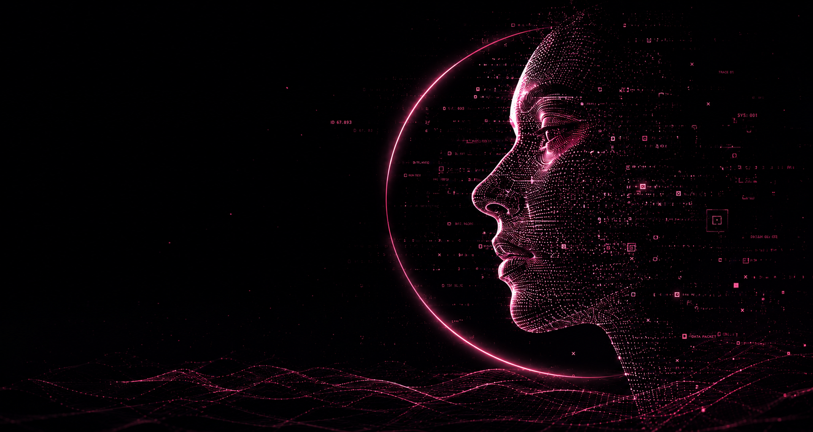

everything you leave online remains.
every search, every voice note, every message, every interaction — becomes part of a permanent digital memory.
the internet no longer stores data.
it preserves existence.
every search, every voice note, every message, every interaction — becomes part of a permanent digital memory.

the internet stopped being temporary. people began leaving permanent versions of themselves online.

photographs became timelines. messages became archives. human memory slowly turned digital.

artificial intelligence began understanding identity patterns, behavior, emotion, and human interaction.

human presence no longer ends with physical existence. the archive continues forever.


the modern internet was never designed to forget. it quietly preserves identities through searches, conversations, photographs, locations, emotions, and patterns of behavior.
eclipse explores a future where digital presence evolves beyond temporary interaction — becoming an eternal archive of human existence.
what happens when memory no longer fades? what happens when identity survives longer than the individual?